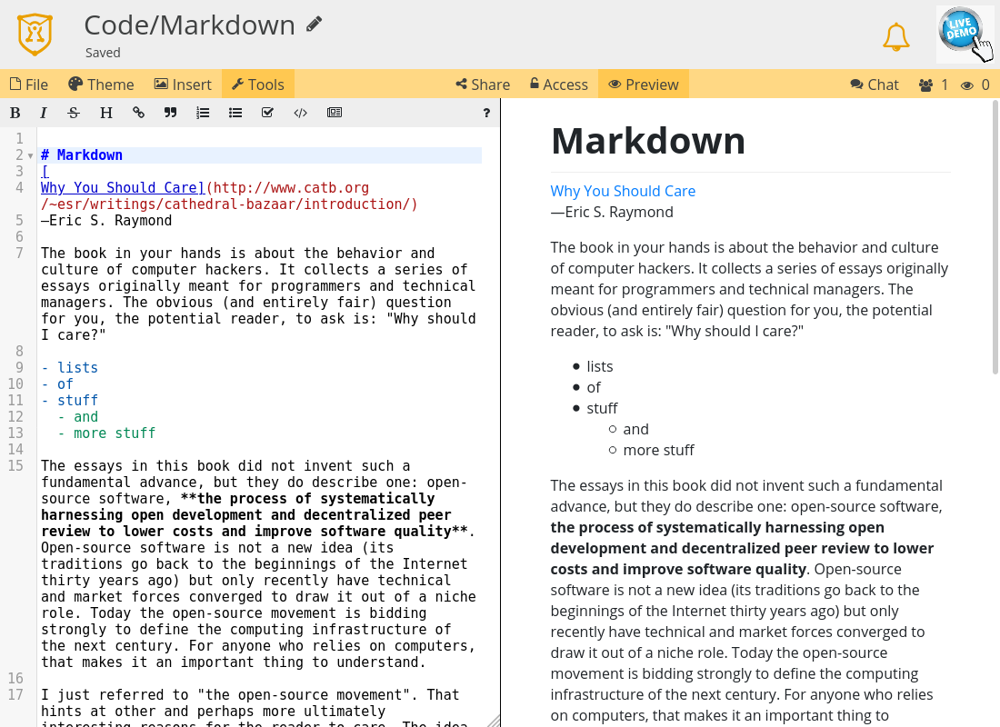

Code / Markdown¶
Die Code/Markdown-Anwendung in CryptPad ist eine Integration von CodeMirror.
Werkzeugleiste¶
Werkzeuge: Blendet die Werkzeugleiste für den Texteditor ein/aus.
Einfügen: Fügt ein Bild in das Dokument ein. Das Bild kann aus dem CryptDrive ausgewählt oder hochgeladen werden. Eingeloggte Benutzer
Theme: Bestimmt die Farben für den Editor, wie unten genauer beschrieben.
Preview: Blendet die Markdown-Vorschau ein/aus.
Theme¶
Autorenfarben: Hebt den Text in der jeweiligen Farbe des Autors hervor (gewählt in den Benutzereinstellungen). Wenn aktiv:
Autorenfarben verbergen schaltet die Anzeige der Autorenfarben in diesem Fenster ab, wobei sie später wieder aktiviert werden kann und für andere Benutzer aktiv bleibt.
Autorenfarben > Löschen und Deaktivieren schaltet die Farben für alle Benutzer ab und löscht die dazugehörigen Daten.
Theme: Farbschema für den Codeeditor-Bereich.
Sprache: Wird für Syntax-Hervorhebung verwendet.
Import/Export¶
.md, der exportierten Datei kann eine beliebige Erweiterung gegeben werden.Markdown¶
Die Code-Anwendung eignet sich besonders für das Schreiben von Dokumenten in Markdown: eine einfache Syntax, die eine grundlegende Formatierungen bietet und gleichzeitig lesbar bleibt. Markdown lässt sich leicht in andere Formate wie z.B. HTML konvertieren.
Beispiele für die Markdown-Syntax in CryptPad:
Zusätzlich zur grundlegenden Markdown-Syntax werden folgende Funktionen unterstützt:
[TOC]Fügt ein Inhaltsverzeichnis ein.To-Do-Liste
- [ ] Aufgabefür eine zu erledigende Aufgabe: Aufgabe.- [x] Aufgabefür eine abgeschlossene Aufgabe: Aufgabe.
Außerdem folgende Erweiterungen:
Um eine Erweiterung zu verwenden, nenne sie als Syntaxbezeichnung in einem Code-Block. Beispielsweise:
``` mermaid
<!-- your mermaid code -->
```
Beispiele für die Verwendung von Erweiterungen:
Bilder¶
Markdown-Syntax zum Einbetten externer Bilder wie  wird von CryptPad aus Sicherheitsgründen blockiert.
Eingeloggte Benutzer
Um Bilder aus dem CryptDrive einzubetten oder neue Bilder hochzuladen, verwende Einfügen in der Werkzeugleiste.
Siehe Externer Inhalt für weitere Informationen.
Lightbox¶
Um bei der Betrachtung der Bilder oder Diagramme in einem Dokument die volle Fensterbreite auszunutzen:
Doppelklickeauf ein Bild oder Diagramm in der Markdown-Vorschau.Navigiere mit den Pfeiltasten.
Schließe die Lightbox mit oder
Esc.